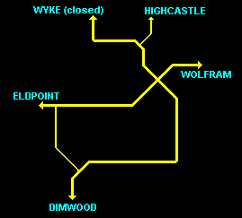

THE GRAIN QUEST
THE GRAIN QUESTPerformed in Chapter 2

THE GRAIN QUEST
This is probably the most elusive Quest in the game, basically because it is confined to the Western Sectors of Zone 5. The game can easily be finished without visiting these Sectors. In order to INITIATE the Grain Quest you must talk to Risa, the High Priestess of Dala. Her food stores are empty. If you can obtain, and bring back a Bag of Grain, she will reward you.
The Grain Quest can be INITIATED in Chapter 1, but it can only be PERFORMED in Chapters 2 and 3. If you initiate it in Chapter 1 (by going to the Temple of Dala), and then talk to Squire Phillip (North of LaMut), you can ask him about GRAIN, and he will offer a valuable clue. You can also initiate the Quest in Chapters 2 and 3.
In Chapter 2 Squire Phillip will be found close to the Temple, performing a private function. At this stage you can also ask him about HIGHCASTLE. Furthermore, there's a Book in the SARTH Library, which adds some color to this Quest:
"Blessed of Dala be the daughters of Flendel Halfgate; so named Thea, Andrea, Gena, Sara, Kira, and Larissa; who in good mercy hath been rightworthy and true to the goddess, having provided much needed leather goods, grain, and entertainment for the woefully poor in their hour of need. From this day in the second year of the reign of good king Lyam the first, forever shall your issue be watched over by the fortunes of the goddess."
If you've visited the Temple of Dala in Chapter 1, you can easily TELEPORT here in Chapter 2 (Ruthia, Lims-Kragma), or Chapter 3 (Banath, Kahooli). Otherwise you'll just have to WALK.
A Tuning Fork is needed in order to finish this Quest, so make sure you have TWO - one to deal with all the Trolls, and another one to give away. (If you've fought the Nighthawks East of the Temple of Ruthia, you should be holding one NOW.)
MAP OF DALA AREA If you haven't already done so, visit the Temple, talk to the Priestess and accept the Grain Quest. There are three large groups of Moredhel Warriors nearby (see Chapter 1 Walhthrough).
The wordlocked chests East of the temple (FUTURE, COALS, SECRET) contain mostly weapons, and the Trap guarding them is easy: Just shove the Solid Crystals in front of the Blasters.
MAP OF ELDPOINT AREA
Don't miss the Goblin Sticker buried in a Mound of Dirt North of Larissa's Barn. Now head East. Near the next house you'll have to fight 4 Moredhel Warriors [Combat 06]. One of them has a Tuning Fork [60]. If you don't already have the Tuning Fork [60] picked up from the Nighthawks East of the Temple of Ruthia, make sure you get this one.
West of Eldpoint you'll have to deal with a group of 3 Trolls [Combat 15]. Another group of 5 Trolls [Combat 05] is waiting East of Eldpoint (unless you've already killed them in Chapter 1). Fight them, if you feel up to it, but Trolls rarely carry any valuable items. Out of these 8 Trolls, only two carry Items: 89 Gold Sovereigns, and Flame Root Oil [1]. Better use the Tuning Fork to get rid of them the easy way.
MAP OF HIGHCASTLE AREA A house in Eldpoint contains Weedwalkers. East of Eldpoint you will enter the Highcastle Sector of Zone 5. This is quite an interesting area to explore, but for the time being just stick to the Main Road. Soon you will spot a Locked Chest South of the Road. It contains a small treasure of Gold and Gemstones, but you'll need a Lockpicking Skill of 95! James can possibly manage this, if his Skill has reached 65, and if he's holding TWO Amulets of the Upright Man! At the crossroads South of Highcastle you'll meet 4 Trolls [Combat 02] (unless you've killed them in Chapter 1). One of them has Silverthorn [3], but you'll probably want to use the Tuning Fork to get rid of them fast. Now go on East, and enter the Wolfram Sector.
MAP OF WOLFRAM AREA
In order to finish the Quest all you need to do is to return to the Temple of Dala. The priestess will give you a choice of adding 25 points to ONE CHARACTER'S Defense Skill, or 10 points to ALL CHARACTERS' Defense Skills.
TIP: If DEFENSE ONLY is Selected, you will gain 37.5 Points for one Character, 15 Points for all three. You can now teleport (or walk) back to whereever you came from, and resume the Main Quest of Chapter 2. But wait! Since you're here, why not explore some more?
HIGHCASTLE
The Highcastle area is quite rewarding, but it is easy to lose one's bearings here, so please familiarize yourself with the simplified Road Map below.
 Go to Highcastle. Talk to Baron Kevin, and accept a mini-Quest. Locate a group of 5 Goblins on the Wyke Road [Combat 03]. One of them has a Spynote which will earn you 200 Gold from the Baron. You will run into 4 Trolls [Combat 13], but since they don't hold any items, just use the Tuning Fork. At a nearby house you will learn of three Moredhel Chests to the South (YESTERDAY, BREATH and BARK). There's a Trap here, so take care:
Push the Middle Transparent Crystal in front of the Rightmost Blaster. Then push the Left Transparent Crystal in front of the Middle Blaster. The way out is now clear, unless you make a stupid move.
Note the clickable HOTSPOT near the Highcastle Sunset. This will take you to Highcastle Gorge and back again, and the journey will take SIX DAYS and cost you as many Rations! Pretty useless? Yes, but there's a devious way to utilize this, if you have PLENTY of Rations. The game adds ONE POINT to your Maximum Health and Stamina every 30 days. This trip allows you make time fly! At a cost of 5 Rations per Character, you can add one point to your Maximum Health and Stamina as often as you want (or can afford). Think about it ...
MAP OF ROAD TO DIMWOOD AREA West of Sara Halfgate's house there are 5 Trolls [Combat 14], carrying nothing. Note the Bushes nearby - they contain Rations and Restoratives. Farther West you will find a Shop (Scavenger's Meet) and 4 more Trolls [Combat 04] carrying no items. Follow the Road to the South. There are no Enemies here until Chapter 3. Locate three Moredhel Chests, GAUNTLET, HORSEMAN, and BOTTLE. The BOTTLE Chest contains the STEELFIRE Scroll and some precious Fadamor's Formula. This road leads to the North Sector of Dimwood (Zone 7). Since this is not easily accessible in Chapter 1, you may be tempted to access it now:
MAP OF DIMWOOD (NORTH) On entering, you will have to fight a group of 3 Witch Hags and 2 Moredhel Warriors [Combat 19].
If you study the MAP of this area, you will be able to pick up some treasures without running into any Enemies. The SHOES Chest contains a Glory Hand. The STOVE Chest has the NIGHTFINGERS Scroll. The THISTLE Chest holds the BLACK NIMBUS Scroll. If you fight the Rusalka by the waterfall, the Mound of Dirt will yield the RIVER SONG Scroll (and STRENGTH DRAIN in Version 1.01).
Back in the Highcastle area, you may want to go on East, towards Wolfram. By all means do so. A house in Wolfram contains an Ambush of 3 Moredhel Warriors and 2 Rogues [Combat 10]. This Combat is actually an illusion created by a Magician named Patrus, whom you will meet if you enter the house. Patrus will be one of your Characters in Chapters 5 and 7. Vist the Temple of Tith, and don't miss the Restorative Bushes North of the Temple. The Arms of Dala Shop has cheap Weapons for sale. The Alchemist's Shop can only be entered after dark.
MAP OF DENCAMP AREA Farther East you will enter the Dencamp Sector. There are NO ENEMIES here until Chapter 3, so feel free to roam, before you enter the Northwarden Sector.
MAP OF NORTHWARDEN AREA This area is Combat-free in this Chapter. If you've already been here in Chapter 1 and solved Minstrel Tamney's mini-Quest, you can talk to him again now, twice.
If you pay him 75 Gold Sovereigns, he will give you a Practice Lute [125] and raise your Barding Skill substantially. You can actually meet him again, pay him 20 Gold Sovereigns, and have your Barding Skill go up even more. Please consult the MAP WEB for details.
You can exit Zone 5 South of Northwarden. This will land you near the Temple of Kahooli in the Kenting Rush Sector of Zone 4. This is a good opportunity to Teleport back to Zone 3, in order to finish Chapter 2.